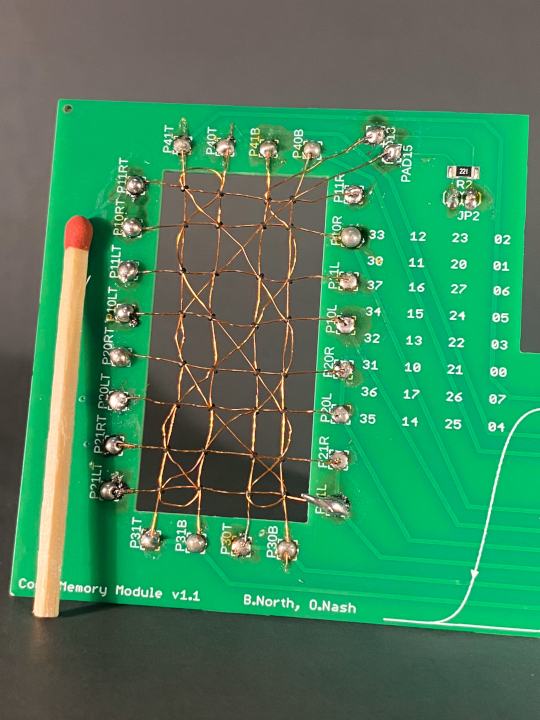

Core memory shield replicated for science project
2025-08-24
We received an enquiry in November 2024 from Joshua Silver, who was considering making the core memory shield for a school project. Joshua had to make a few changes to our original design, as he had sourced his own cores and so some component values needed adjusting, and other components were not readily available. We were happy to discuss his questions with him over email, and he got the core memory working. With his permission, we are pleased to publish some of his photos and other resources here.
Photos
The assembled driver shield and core daughter-board:
Detail of the core daughter-board:

Project poster
Joshua presented his work in the form of a poster:
Thanks to Joshua for these resources and permission to use them.